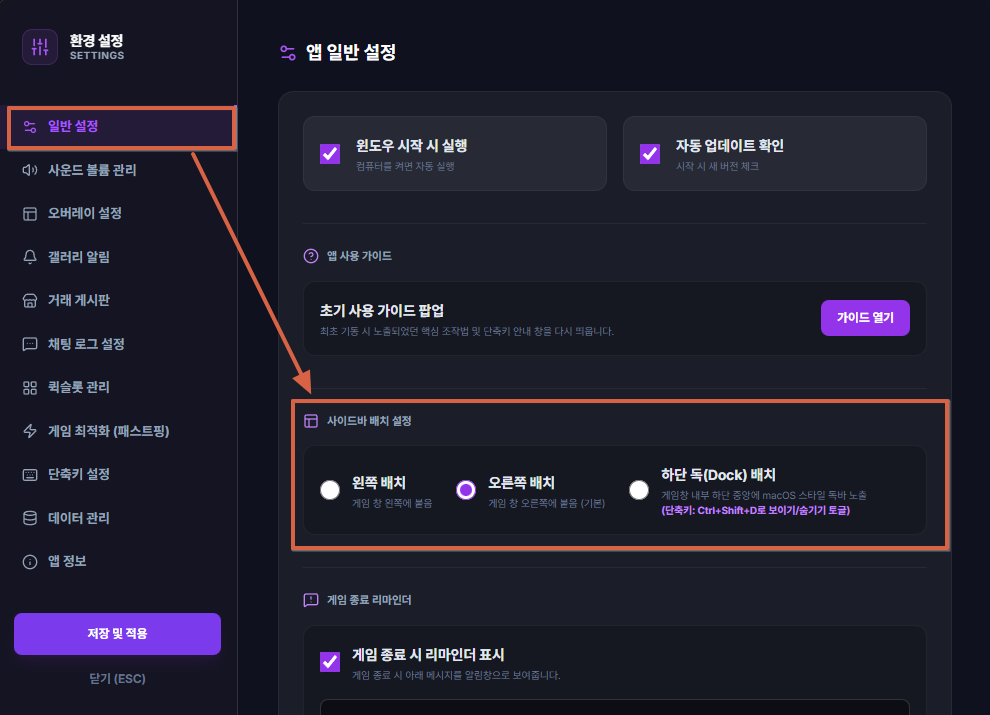

twOverlay(테일즈위버 오버레이) 제공 기능
twOverlay는 사냥과 레이드 등 플레이 전반에 걸쳐 필요한 핵심 편의 기능을 게임 화면에 자석처럼 붙여 실시간으로 모니터링할 수 있도록 돕습니다.
📈 실시간 경험치(XP) 미터기: 획득 경험치, 분당 효율(EPM), 킬 수 및 레벨업까지 남은 시간 실시간 계산 및 HUD 노출.
📅 모험일지 자동 기록: 획득 득템 로그를 실시간 파싱하여 달력 스택 뷰 및 시간별 타임라인에 이미지와 함께 박제.
🕒 필드 보스 출현 경고: 보스 타임라인 기반 알람 카드가 게임 화면 우측(Dock 설정 시) 또는 사이드바에 팝업 노출.
🧪 지능형 버프 타이머: 중요 도핑 버프의 남은 시간(1분 전, 10초 전, 5초 전)을 감지해 오버레이 카드로 경고.
💬 자석형 채팅 오버레이: 게임 화면 크기에 연동되어 게임 창을 가리지 않고 투명하게 채팅 창 모니터링 가능.
📋 일일/주간 숙제 체크리스트: 잊기 쉬운 콘텐츠 클리어 횟수 현황을 빠르게 체크할 수 있는 위젯 제공.
테일즈위버 로그(ChatLog) 폴더 지정
앱의 모든 자동화 기능이 게임 내 액션과 정상 반응하려면 반드시 본인의 테일즈위버 설치 경로 폴더를 앱에 올바르게 연동해주어야 합니다.
연동 폴더 정밀 가이드
- ChatLog 폴더 지정: 실시간 경험치(XP) 미터기, 보스 스폰 알람, 모험일지 자동 득템 기록을 위해 필수 설정해야 하는 경로입니다.

전체 창 모드 실행 시 사이드바 가려짐 대처법
테일즈위버를 전체 창 모드(또는 전체화면)로 구동하시는 분들은 사이드바 창이 뒤로 가려져 보이지 않거나 꺼진 것처럼 느껴질 수 있습니다. 아래 팁을 확인하세요.
사이드바 설정 위치를 Dock으로 변경하기
1. 테일즈위버 게임을 임시로 창 모드로 변경하여 숨은 사이드바를 확인한 뒤, 하단 톱니바퀴(⚙️)를 눌러 설정에 들어갑니다.
2. 또는 바탕화면의 시스템 트레이 아이콘(시계 옆)을 우클릭하여 [환경설정] 메뉴를 즉시 열어줍니다.
3. 설정 내 '사이드바 배치 설정'에서 위치를 Dock 배치로 변경합니다.
2. 또는 바탕화면의 시스템 트레이 아이콘(시계 옆)을 우클릭하여 [환경설정] 메뉴를 즉시 열어줍니다.
3. 설정 내 '사이드바 배치 설정'에서 위치를 Dock 배치로 변경합니다.

프로그램 지원 단축키 요약
플레이 중 아래의 단축키를 사용하여 각 윈도우 및 기능을 매우 빠르게 끄고 켤 수 있습니다.
| 기능 안내 | 단축키 입력 |
|---|---|
| 사이드바(주제어 창) 보이기 / 숨기기 | CtrlShiftD |
| 오버레이 화면 마우스 클릭 투과 토글 | CtrlShiftT |
| 일일 보스 / 숙제 체크리스트 토글 | CtrlShiftC |
| 버프 타이머 HUD 보이기 / 숨기기 | CtrlShiftB |
| 실시간 채팅 오버레이 토글 | CtrlShiftH |
| 실시간 경험치(XP) 세션 측정치 초기화 | CtrlShiftX |
| 기록된 버프 타이머 리스트 강제 전체 삭제 | CtrlShiftE |